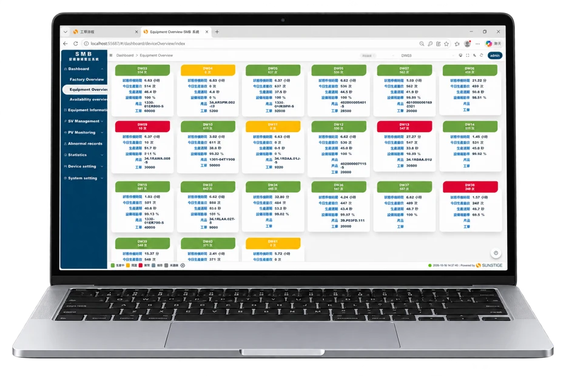
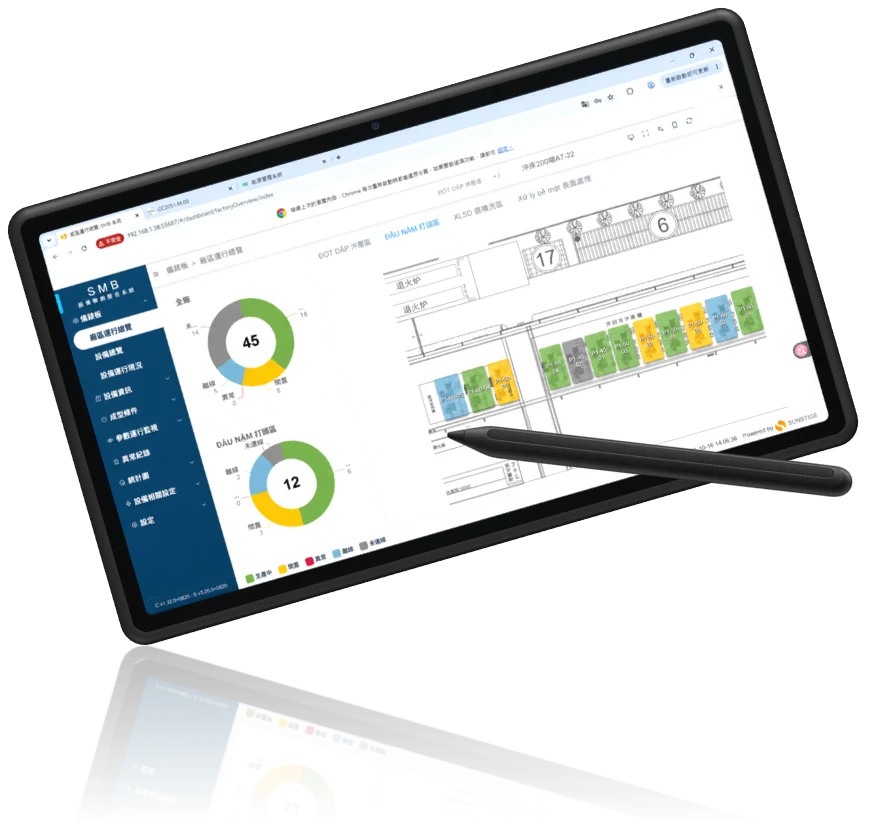
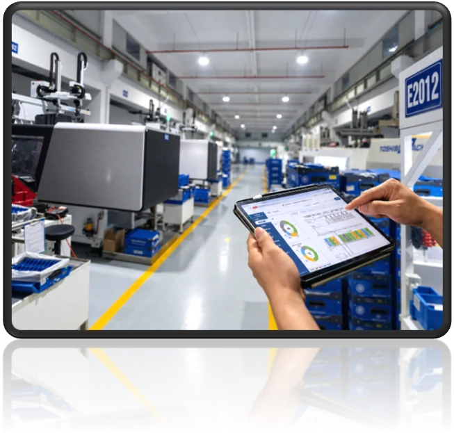
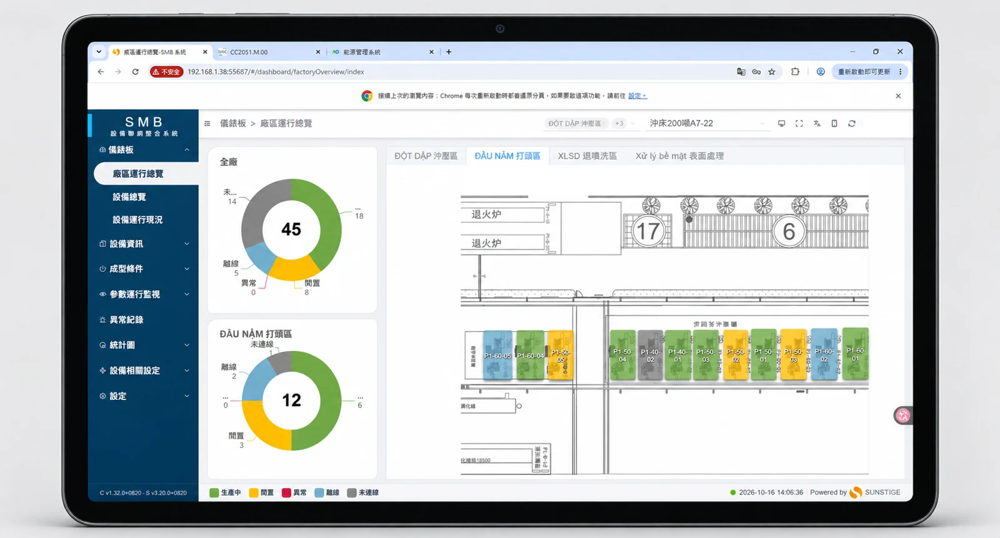
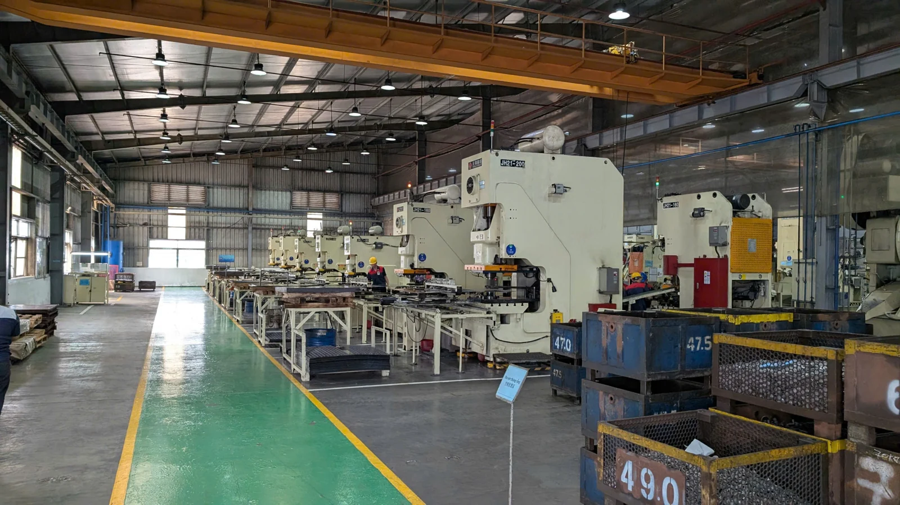
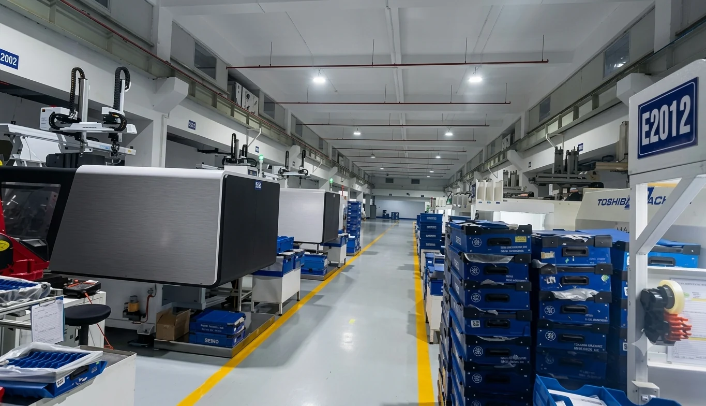

Kết nối máy móc
Xác định thiết bị và phương thức kết nối phù hợp tại hiện trường.
SMB · IoT / CHUYỂN ĐỔI SỐ NHÀ MÁY
Dữ liệu từ hiện trường, tập trung trên một nền tảng. Theo dõi trạng thái máy, sản lượng và tiến độ để hỗ trợ quản lý sản xuất.
Trao đổi về dự án SMB · IoT ↗↓


Từ dữ liệu tại máy đến thông tin cho quản lý.
IoT kết nối thiết bị để thu thập dữ liệu. SMB tập trung hiển thị trạng thái máy, thời gian chạy/dừng, sản lượng và dữ liệu vận hành trên một nền tảng.
Các hồ sơ trong tài liệu thể hiện triển khai SMB tại Vonmax và Seiyo, với phạm vi kết nối và giám sát xác định theo từng nhà máy.
Xác định thiết bị và phương thức kết nối phù hợp tại hiện trường.
Ghi nhận trạng thái, sản lượng, thời gian chạy/dừng và các thông số khả dụng.
Theo dõi tổng quan nhà máy và từng máy trên Dashboard.
Đối chiếu kế hoạch, phân tích thời gian dừng và hỗ trợ cải thiện hiệu suất.

Tự động thu thập dữ liệu, hạn chế nhập lại và sai sót thao tác.
Nhận biết máy đang chạy, chờ, dừng hoặc mất kết nối.
Đối chiếu sản lượng thực tế theo máy và theo ca.
Tổng hợp dữ liệu hiệu suất và nguyên nhân dừng để hỗ trợ quyết định.
GIAO DIỆN HỆ THỐNG
Hình giao diện thực tế trong tài liệu dự án.
DỰ ÁN THỰC TẾ

Bài toán: báo công chưa kịp thời, ghi chép thủ công dễ sai và dữ liệu sử dụng máy chưa chính xác gây khó khăn cho quản lý chi phí.
Giải pháp: kết nối và thu thập dữ liệu trực tiếp từ máy, tự động truyền sản lượng và trạng thái vận hành về hệ thống tập trung.
Mục tiêu: dữ liệu sản xuất minh bạch, giảm sai sót ghi chép và hỗ trợ quản lý sản xuất, chi phí.

Kết nối máy ép nhựa để thu thập trạng thái, thời gian chạy/dừng, sản lượng và thông số vận hành.
Quản lý sản lượng theo máy và ca; theo dõi nguyên nhân dừng, cảnh báo bất thường và phân tích hiệu suất trên Dashboard.
Lộ trình SMB: kết nối máy móc, thu thập dữ liệu tự động, giám sát và phân tích để hỗ trợ cải tiến vận hành.
Theo dõi vận hành, dừng máy và nguyên nhân dừng.
Đối chiếu theo thiết bị, ca và kế hoạch sản xuất.
Hỗ trợ phát hiện bất thường và đánh giá hiệu suất thiết bị.
SMB tập trung trạng thái máy, sản lượng và thời gian chạy/dừng để hỗ trợ giám sát sản xuất. Các thông số bổ sung phụ thuộc thiết bị và phạm vi kết nối đã xác nhận.
Danh sách máy và model, thông tin bộ điều khiển, sơ đồ mạng, cách ghi nhận sản lượng hiện tại và những vấn đề muốn giải quyết.
Khả năng thu thập dữ liệu phụ thuộc thiết bị, bộ điều khiển và giao thức. Cần kiểm tra thực tế trước khi xác định phương án và phạm vi dữ liệu.
Tài liệu mô tả chức năng và mục tiêu triển khai tại Vonmax, Seiyo; chưa cung cấp tỷ lệ cải thiện trước–sau đã xác nhận.